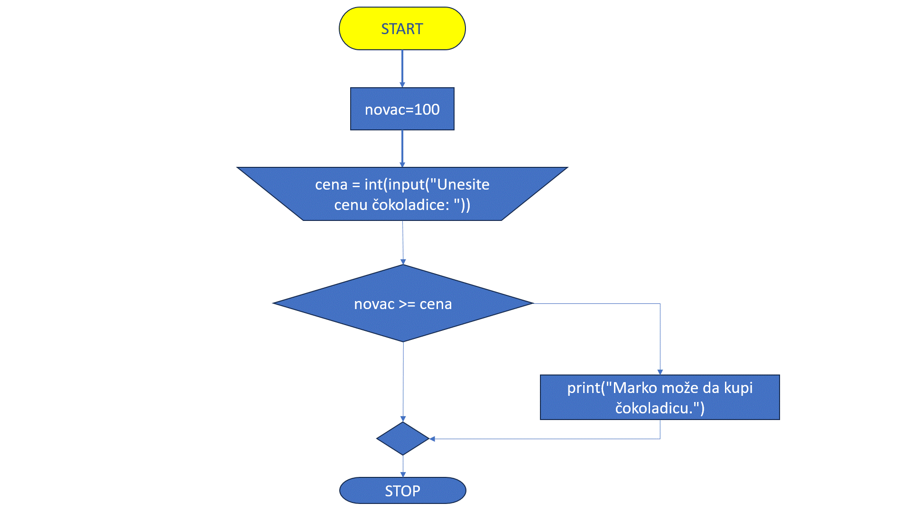

Гранање¶
Посматрамо следећи проблем:

Марија кренула у књижару да купи 3 свеске и 4 оловке и понела 500 динара. Напиши програм који за унете цене свезака и оловки испитује да ли је Марија понела довољно новца и ако јесте, колики кусур добија.
Програм који решава овај проблем треба другачије да се понаша у зависности од тога да ли је Марија понела довољно новца или није.
Ако Марија има довољно новца - исписује добијен кусур
Ако Марија нема довољно новца - исписује да Марија нема довољно новца
у овој лекцији показаћемо како можемо да формирамо овакве програме.
ПОДСЕТНИК: Логички изрази¶
У прошлој лекцији поменули смо bool променљиве које могу да имају само две вредности: True или False које представљају тачно и нетачно.
Ове вредности се користе у логичким изразима који се користе prilikom гранања.
Na primer: Израз \(3 > 2\) има вредност True (односно тачно) јер је 3 веће од 2, док израз \(3 < 2\) има вредност False (односно нетачно) јер 3 није мање од 2.
Математика |
Пајтон |
Значење |
|---|---|---|
\(a < b\) |
a<b |
a је мање од b |
\(a > b\) |
a>b |
a је веће од b |
\(a <= b\) |
a<=b |
a је мање или једнако b |
\(a >= b\) |
a>=b |
a је веће или једнако b |
\(a == b\) |
a==b |
a је једнако b |
\(a != b\) |
a!=b |
a није једнако b |
Покрени следећи програм и пробај да измениш бројеве и симболе. Посматрај како се вредност израза мења.

Обрати пажњу да се = користи када променљивој додељујемо вредност, а да се == користи за поређење да ли су две вредности једнаке.
Наредба if¶
У пајтону наредба if се користи за условно извршавање делова кода. Када се команда позива дат је услов који је најчешће логички израз. Ако је услов тачан, извршава се блок кода који следи иза наредбе if. Ако услов није тачан, блок кода се прескаче.
У Пајтону, input() функција се користи за читање података са стандардног улаза. Када програм наиђе на input(), зауставља се и чека да корисник унесе податак и притисне Enter. Подаци које корисник унесе чувају се као стринг (ниски карактерa) и могу се доделити променљивој за даљу употребу.
broj = input()
Када се изврши input(), на екрану се појави курсор, а програм чека на унос од стране корисника. Корисник унесе податак и притисне Enter. Унети број се чува у променљивој ’broj’.
input() увек враћа податке као стринг. Ако је потребно да се подаци користе као број, можемо их конвертовати са int() или float(). Стандардни улаз је користан када програм треба интерактивно да добије информације од корисника.
Како функционише гранање?¶
Гранање омогућава да се на основу услова изврши један блок кода, док се други блокови прескачу. Најчешће се користи наредба if, која проверава да ли је одређени услов тачан (True). Ако јесте, извршава се блок кода који следи; ако није, програм прелази на следећу проверу или наставља извршавање.
Основна структура гранања
Погледајмо пример гранања у Пajтону:
У овом примеру, програм проверава да ли је x већи од 5: - Ако је услов True (тачан), извршава се прва грана и исписује се порука „x је већи од 5”. - Ако услов није тачан (False), програм прелази на другу грану, која исписује „x је мањи или једнак 5”.
Зашто је важно гранање?
Гранање омогућава програмирање различитих сценарија и „путања” које програм може да следи у зависности од одређених података или уноса корисника. Гране омогућавају динамичко извршавање програма, где исходи зависе од услова који се проверавају током извршавања.
Вишеструке гране: if, elif, и else
Када имамо више услова, можемо користити наредбу elif (скраћено од „else if”):
У овом примеру: - Прва грана се проверава да ли је температура већа од 30. Ако јесте, исписује се „Вруће је.” - Ако први услов није тачан, прелази се на наредну грану са elif, где се проверава да ли је температура већа од 20. - Ако ниједан услов није испуњен, извршава се последња грана (else), која исписује „Хладно је.”
Кључне тачке
Гране су различите путање у програму које зависе од услова.
Гранање омогућава да програм изврши различите делове кода на основу одлука.
Овакво одвајање програма у различите правце чини га флексибилнијим и прилагодљивим у различитим ситуацијама.
Стандардни улаз је основни начин комуникације између корисника и програма и омогућава прилагођено извршавање кода на основу корисничког уноса.
Марко је понео 100 динара у продавнцицу са намером да купи чоколадицу. Цена чоколадице се уноси на стандардни улаз. Ако марко може да купи чоколадицу програм треба да испише поруку. Ако Марко не може да купи чоколадицу програм не треба да испише поруку.
Кажемо да овај програм садржи грану.
Уколико је услов тачан, тј. ако је новац који је Марко понео већи или једнак цени чоколадице, извршава се грана унутар if наредбе чиме се исписује порука.
Ако услов није испуњен, блок кода унутар`if` наредбе се не извршава.
Гранање је концепт у програмирању који омогућава да програм доноси одлуке на основу одређених услова. Када у коду дођемо до тачке где треба да изаберемо који део програма ће се извршити, програм се „одваја” у различите правце у зависности од испуњености услова. Свако од ових „одвајања” називамо граном.
Дакле, свака од ових различитих путања или „одвајања” програма, у зависности од услова, назива се грана.
Дијаграм тока овог задатка приказује следећа анимација:
{kind=link}
У овом програму имамо променљиву novac која садржи износ новца који Марко има (у овом случају 100). Програм затим тражи од корисника да унесе цену чоколадице (cena). На основу овога, програм проверава да ли Марко има довољно новца да купи чоколадицу. Када је услов испуњен. Ако је услов novac >= cena тачан, то значи да је износ новца који Марко има једнак или већи од цене чоколадице. У том случају, програм ће исписати поруку:
Марко може да купи чоколадицу.
Ово значи да Марко има довољно новца за куповину чоколадице.
Уколико услов није испуњен следећи дијаграм тока приказује редослед извршавања наредби и услова:
{kind=link}
У пајтону се блокови кода одвајају индентацијом (размацима који се најчешће формирају коришћењем дугмета tab). Уколико желимо да напишемо блок кода који ће се извршити уколико је услов тачан, морамо га увући у односу на if наредбу. Сваки блок кода почиње са двотачком и наредбом и завршава се када се вратимо на почетну раван.
Пример:
if uslov:
# ovaj kod se nalazi unutar if bloka
#ovaj kod se nalaazi van if bloka
if uslov1:
# prvi blok koda
if uslov2:
# drugi blok koda
# izlazimo iz drugog bloka koda i nastavljamo izvrsaavanje prvog bloka koda
# izlazimo iz prvog bloka koda i nastavljamo glavni blok koda
Kod koji se nalazi van if наредбе се увек извршава, док се код који се налази унутар if наредбе извршава само ако је услов тачан.
Наредба ’else’¶
Приметићемо да у прошлом случају смо имали само начин да покренемо посебан блок кода ако је услов тачан. Шта ако желимо да покренемо други блок кода ако услов није тачан?
У овом случају користићемо else наредбу.
Марко је понео 100 динара у продавницу са намером да купи чоколадицу. Цена чоколадице се уноси на стандардни улаз. Ако Марко може да купи чоколадицу програм треба да испише поруку и колики кусур је добио. Ако Марко не може да купи чоколадицу програм треба да испише поруку.
else наредба се користи за покретање блока кода који треба бити извршен ако услов је if наредбе неиспуњен. Другим речима програм ће или извршити део кода под if блоком или ће извршити део кода под else блоком. Ако Марко има довољно новца покренуће се први блок кода, а ако нема довољно новца покренуће се други блок кода.
Наредба else мора да стоји након if наредбе, не може стајати сама по себи.
наредба else може стајати само једном по if наредби. Не може се десити да имамо више else наредби за једну if наредбу.

Написати програм који проверава да ли је број паран.
Подсетимо се да је број дељиб са неким другим бројем ако је остатак дељења са тим борјем једнак 0. С обзиром да су парни бтојеви бројеви дељиви са 2 онда су парни бројеби бројеви чији је остатак при дељењу са 2 једнак 0.
Написати програм који за унети број поена освојен на тесту исписује оцену.
5 - изнад 85 поена
4 - између 70 и 85 поена
3 - између 55 и 70 поена
2 - између 40 и 55 поена
1 - испод 40 поена
poeni = int(input("Unesite broj poena: "))
if poeni > 85:
print("Ocena 5")
if poeni >= 70:
print("Ocena 4")
if poeni >= 55:
print("Ocena 3")
if poeni >= 40:
print("Ocena 2")
if poeni < 40:
print("Ocena 1")

- Да
- Не
Q-4: Да ли ће дати програм исправно радити?
Како можемо поправити претходни програм тако да исправно ради у сваком случају?
Проблем у претходном програму је што ће се исписати тражена оцена и све оцене исод ње. на пример: ако је број поена 75 исписаће се оцена 4 зато што је \(75 > 70\) али ће се исписати и оцене 3 и 2 зато што је \(75 > 55\) и \(75 > 40\).
Да бисмо избегли овај проблем потребно је да осигурамо да се услови након првог испуњеног услова уопште не проверавају. То можемо урадити користећи else наредбу. Написаћемо програм тако да само ако први услов није испуњен се проверавају остали, само ако други услов није испуњен се проверавају остали итд. се проверавају остали итд…
Последњи услов у овом случају не морамо да проверавамо јер ако број није већи ли једнак од 40 онда је сигурно мањи од 40.
Наредба ’elif’¶
Приметимо да у се у прошлом раду много пута понавља наредба else коју прати наредба if. Да бисмо уредили код можемо користити наредбу elif. Ова наредба се понаша као else и if у једном. Блок кода који се налази под elif наредбом ће се извршити само ако није испуњен услов if команде за коју је elif команда везана и ако јесте испуњен услов elif команде.
Пример: уредићемо претходни код користећи elif команду.
Приметим ода команда`else`може регуларно да се користи и надовезује се на elif зато што је elif команда заправо само скраћени облик прошлог примера.
Логичке вредности добијене овим операторима могу се користити у условним конструкцијама за контролу тока програма.
Оператори за поређење су основни алати за рад с логичким вредностима у Пајтону. Они вам омогућавају да проверите односе између вредности и користите те информације за контролу тока програма.
Кориснички унос са провером¶
Важно је осигурати да корисник унесе исправне податке. Уколико се очекује број, треба проверити да ли је унесена вредност валидна пре него што наставите са програмом. Пример: Проверa да ли је унет цео број
Рад са различитим типовима уноса
Корисник може унети различите типове података, а ви можете контролисати унос и обраду зависно од потреба програма.
Пример: Унос имена и година
Шта ради функција isdigit()?
Функција isdigit() проверава да ли се уноси само бројеве. Ако unet_broj садржи само бројеве (цифре од 0 до 9), isdigit() ће вратити True, што значи да је унос исправан, и програм ће исписати поруку „Унели сте број:”, праћену тим бројем. Ако unet_broj садржи било који знак који није број (на пример, слова или специјалне знакове), isdigit() ће вратити False, и тада ће програм приказати поруку „Морате унети цео број.”
Објашњење корак по корак:
unet_broj = input(„Унесите цео број: „): # Програм користи input() да би добио унос од корисника и чува га у променљивој unet_broj као текст.
if unet_broj.isdigit():: # Овде isdigit() проверава да ли unet_broj садржи само цифре. Ако садржи, услов ће бити тачан (True).
Ако је услов тачан (True): # Програм исписује поруку „Унели сте број:”, и исписује унети број.
Ако је услов нетачан (False): # Програм приказује поруку „Морате унети цео број.”, што означава да је унос био неважећи.
Зашто је корисна функција isdigit()?
Функција isdigit() је корисна јер спречава грешке када је потребно да корисник унесе само бројеве. Уместо да програм настави са неважећим уносом, isdigit() осигурава да корисник уноси исправан формат пре него што програм настави са извршавањем.
Примена у реалним сценаријима
Функција input() може се користити у различитим апликацијама где је потребно узимати унос од корисника. На пример, можете направити мини калкулатор који узима два броја и операцију од корисника. Пример: Једноставан калкулатор